Faros y lámparas delanteras en Panamá
265 disponibles hoy, originales y genéricas, cada una con su foto y su código. Elige la marca de tu carro:
- Garantía de 3 días
- Foto real de cada pieza
- Efectivo, Yappy o ACH
- Lunes a sábado, 8:00 a. m. a 5:00 p. m.
Faros y lámparas delanteras para Toyota 65
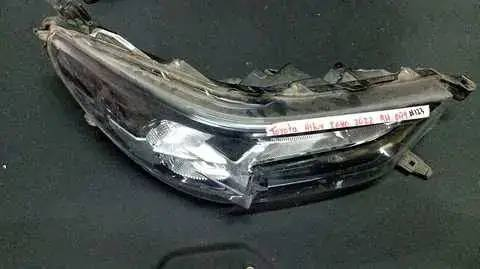
123Toyota Hilux Revo2021-26 · lado derecho · original 124Toyota Fortuner2016-20 · lado derecho · original
124Toyota Fortuner2016-20 · lado derecho · original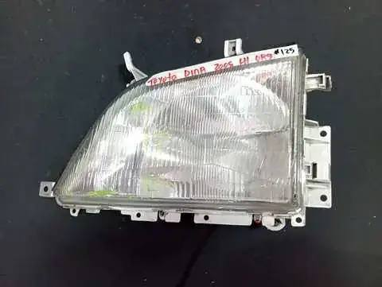
125Toyota Dyna2005 · lado izquierdo · original 126Toyota Prado2014-17 · genérico
126Toyota Prado2014-17 · genérico 127Toyota Fortuner2012-17 · lado derecho · original
127Toyota Fortuner2012-17 · lado derecho · original 128Toyota Rush2018-26 · lado izquierdo · original
128Toyota Rush2018-26 · lado izquierdo · original 129Toyota Prado2014-17 · lado derecho · genérico
129Toyota Prado2014-17 · lado derecho · genérico 130Toyota Land Cruiser2008-11 · lado derecho · original
130Toyota Land Cruiser2008-11 · lado derecho · original 131Toyota 4Runner2014-24 · lado derecho · original
131Toyota 4Runner2014-24 · lado derecho · original 132Toyota RAV42019-22 · lado izquierdo · original
132Toyota RAV42019-22 · lado izquierdo · original 134Toyota Hilux2008-11 · lado derecho · genérico
134Toyota Hilux2008-11 · lado derecho · genérico 135Toyota Fortuner2021-26 · lado derecho · genérico
135Toyota Fortuner2021-26 · lado derecho · genérico 139Toyota Yaris2014-17 · lado derecho · original
139Toyota Yaris2014-17 · lado derecho · original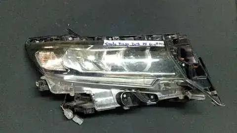
140Toyota Prado2018-23 · lado derecho · genérico 141Toyota Corolla2019-24 · lado izquierdo · original
141Toyota Corolla2019-24 · lado izquierdo · original 143Toyota RAV42013-15 · lado derecho · original
143Toyota RAV42013-15 · lado derecho · original 144Toyota Yaris2023-26 · lado izquierdo · original
144Toyota Yaris2023-26 · lado izquierdo · original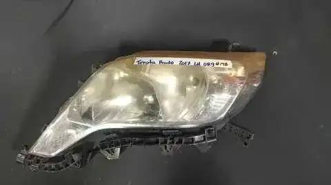
146Toyota Prado2014-17 · lado izquierdo · original 147Toyota Innova (led)2024 · lado izquierdo · original
147Toyota Innova (led)2024 · lado izquierdo · original 148Toyota Hilux Vigo2016-17 · lado izquierdo · original
148Toyota Hilux Vigo2016-17 · lado izquierdo · original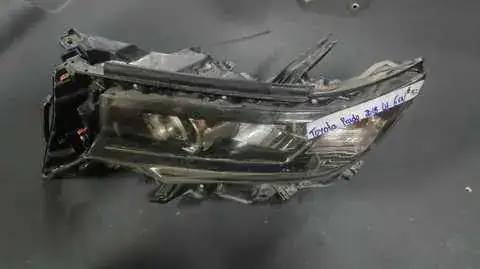
150Toyota Prado2018-23 · lado izquierdo · genérico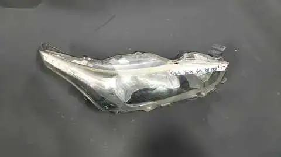
152Toyota Yaris2014-17 · lado derecho · original 153Toyota Yaris Sedan2014-17 · lado izquierdo · genérico
153Toyota Yaris Sedan2014-17 · lado izquierdo · genérico 154Toyota Hilux (led)2021-26 · lado izquierdo · original
154Toyota Hilux (led)2021-26 · lado izquierdo · original 155Toyota RAV42016-18 · lado izquierdo · original
155Toyota RAV42016-18 · lado izquierdo · original 156Toyota Corolla2017-19 · lado derecho · genérico
156Toyota Corolla2017-19 · lado derecho · genérico 157Toyota Hilux Vigo2005-08 · lado derecho · genérico
157Toyota Hilux Vigo2005-08 · lado derecho · genérico 158Toyota RAV42009-12 · lado izquierdo · original
158Toyota RAV42009-12 · lado izquierdo · original 159Toyota Yaris Hatchback2018-22 · lado derecho · original
159Toyota Yaris Hatchback2018-22 · lado derecho · original 160Toyota Yaris2014-17 · lado derecho · genérico
160Toyota Yaris2014-17 · lado derecho · genérico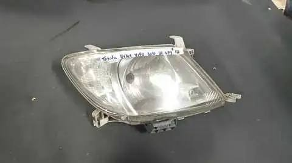
161Toyota Hilux Vigo2009-11 · lado izquierdo · original 162Toyota Hilux Vigo2009-11 · lado derecho · original
162Toyota Hilux Vigo2009-11 · lado derecho · original 163Toyota Land Cruiser2016-21 · lado izquierdo · original
163Toyota Land Cruiser2016-21 · lado izquierdo · original 164Toyota Hilux Revo2018-20 · lado izquierdo · original
164Toyota Hilux Revo2018-20 · lado izquierdo · original 554Toyota Fortuner2009-11 · lado derecho · original
554Toyota Fortuner2009-11 · lado derecho · original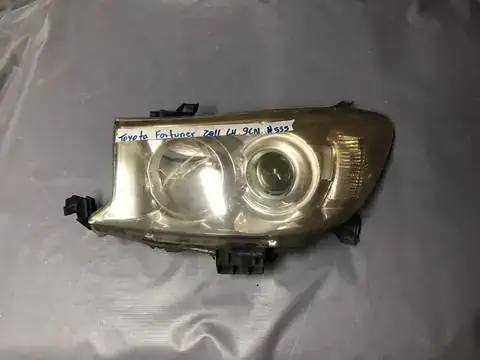
555Toyota Fortuner2009-11 · lado izquierdo · genérico 556Toyota Prado2010-13 · lado izquierdo · original
556Toyota Prado2010-13 · lado izquierdo · original 557Toyota Prado2010-13 · lado derecho · original
557Toyota Prado2010-13 · lado derecho · original 860Toyota Tundra2024 · lado izquierdo · original
860Toyota Tundra2024 · lado izquierdo · original LD001Toyota Prado2014-2017 · lado derecho · original
LD001Toyota Prado2014-2017 · lado derecho · original LD002Toyota Prado2014-2017 · lado izquierdo · original
LD002Toyota Prado2014-2017 · lado izquierdo · original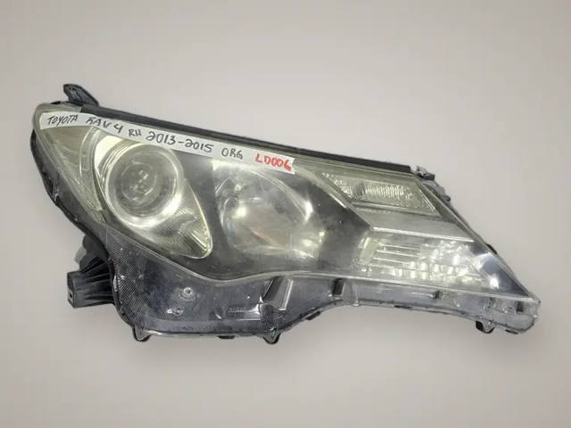
LD006Toyota RAV42013-2015 · lado derecho · original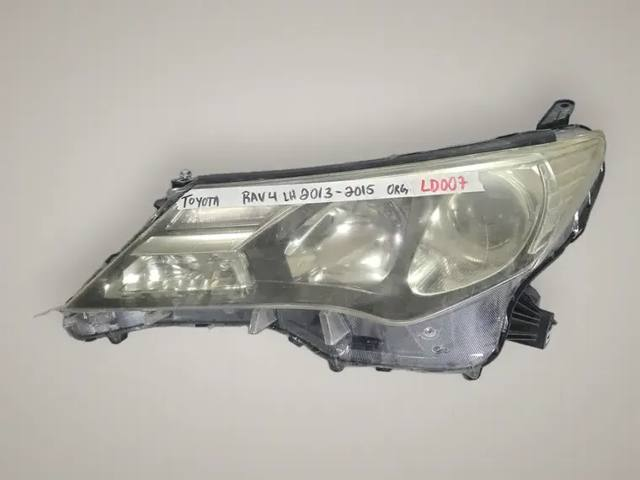
LD007Toyota RAV42013-2015 · lado izquierdo · original LD017Toyota RAV42016-18 · lado derecho · original
LD017Toyota RAV42016-18 · lado derecho · original LD020Toyota Hilux Revo2016-20 · lado izquierdo · original
LD020Toyota Hilux Revo2016-20 · lado izquierdo · original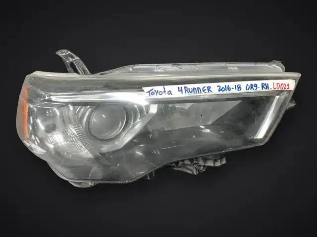
LD021Toyota 4Runner2014-24 · lado derecho · original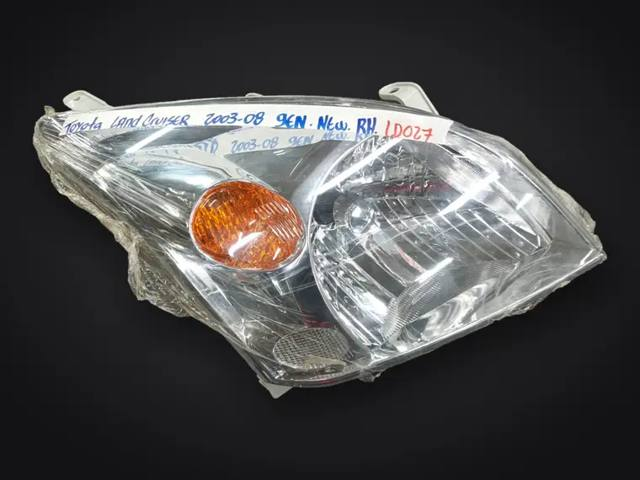
LD027Toyota Land Cruiser2003-08 · lado derecho · genérico nuevo LD026Toyota Corolla2014-16 · lado derecho · original
LD026Toyota Corolla2014-16 · lado derecho · original LD025Toyota Corolla2014-16 · lado izquierdo · original
LD025Toyota Corolla2014-16 · lado izquierdo · original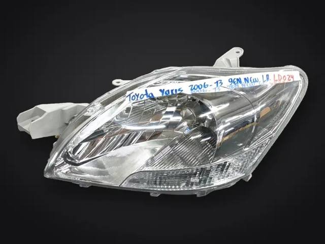
LD024Toyota Yaris2006-13 · lado izquierdo · genérico nuevo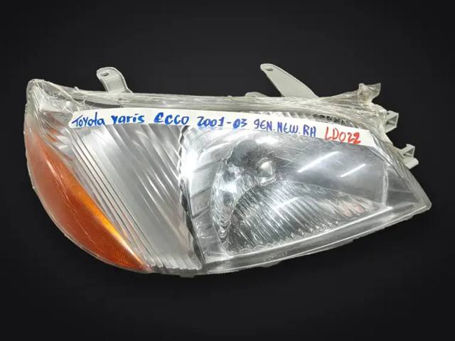
LD022Toyota Yaris Echo2001-03 · lado derecho · genérico nuevo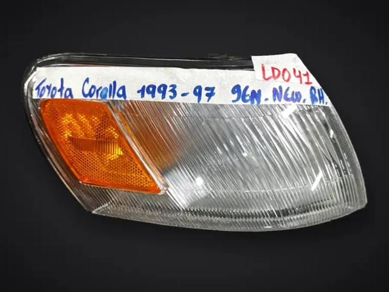
LD041Toyota Corolla1993-97 · lado derecho · genérico nuevo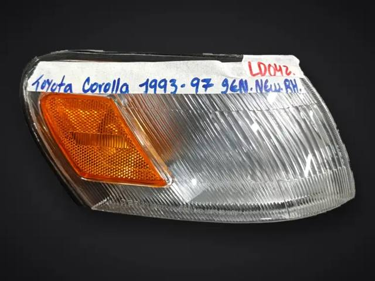
LD042Toyota Corolla1993-97 · lado derecho · genérico nuevo LD043Toyota Corolla1993-97 · lado derecho · genérico nuevo
LD043Toyota Corolla1993-97 · lado derecho · genérico nuevo LD044Toyota Corolla1993-97 · lado izquierdo · genérico nuevo
LD044Toyota Corolla1993-97 · lado izquierdo · genérico nuevo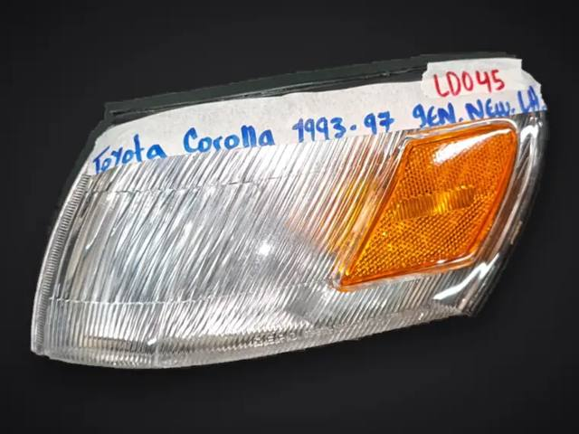
LD045Toyota Corolla1993-97 · lado izquierdo · genérico nuevo LD046Toyota Corolla1993-97 · lado derecho · genérico nuevo
LD046Toyota Corolla1993-97 · lado derecho · genérico nuevo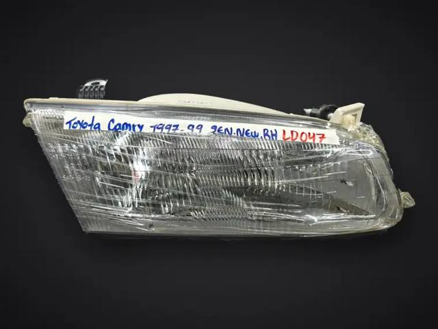
LD047Toyota Camry1997-99 · lado derecho · genérico nuevo LD048Toyota Camry1997-99 · lado izquierdo · genérico nuevo
LD048Toyota Camry1997-99 · lado izquierdo · genérico nuevo LD049Toyota Camry1997-99 · lado izquierdo · genérico nuevo
LD049Toyota Camry1997-99 · lado izquierdo · genérico nuevo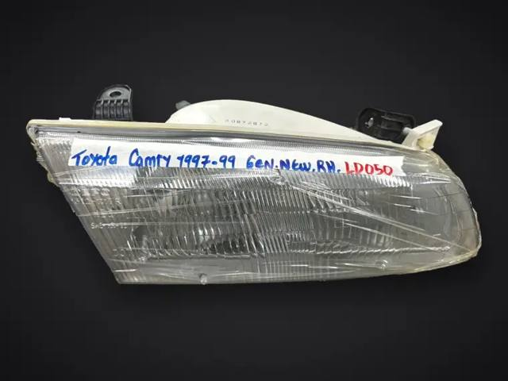
LD050Toyota Camry1997-99 · lado derecho · genérico nuevo LD051Toyota Camry1997-99 · lado izquierdo · genérico nuevo
LD051Toyota Camry1997-99 · lado izquierdo · genérico nuevo LD053Toyota RAV42019-23 · lado derecho · original
LD053Toyota RAV42019-23 · lado derecho · original LD056Toyota RAV42013-16 · lado derecho · original
LD056Toyota RAV42013-16 · lado derecho · original LD069Toyota Yaris2019-22 · lado izquierdo · original
LD069Toyota Yaris2019-22 · lado izquierdo · originalFaros y lámparas delanteras para Hyundai 32
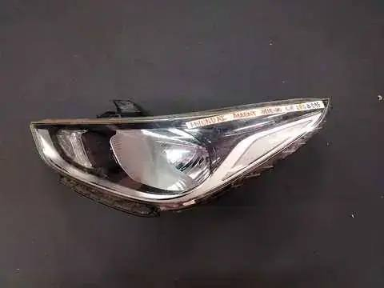
015Hyundai Accent2018-20 · lado izquierdo · original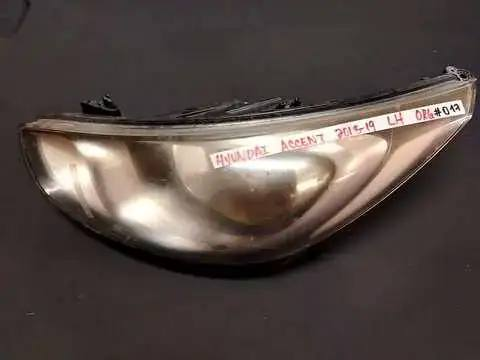
017Hyundai Accent2018-20 · lado izquierdo · original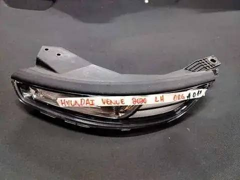
018Hyundai Venue2020 · lado izquierdo · original 019Hyundai Venue2020 · lado izquierdo · original
019Hyundai Venue2020 · lado izquierdo · original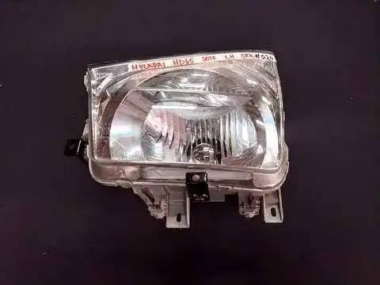
020Hyundai HD652010 · lado izquierdo · original 021Hyundai Tucson2019-21 · lado derecho · genérico
021Hyundai Tucson2019-21 · lado derecho · genérico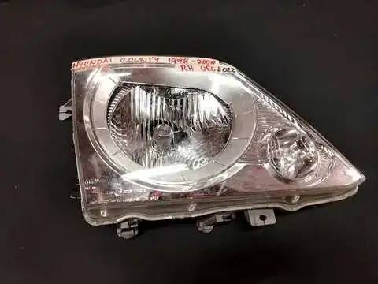
022Hyundai County1998-2008 · lado derecho · original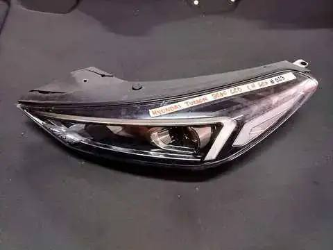
023Hyundai Tucson2019-21 · lado izquierdo · genérico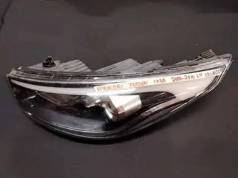
024Hyundai Tucson ix352010-15 · lado izquierdo · original 025Hyundai Grand i102018-20 · lado derecho · genérico
025Hyundai Grand i102018-20 · lado derecho · genérico 026Hyundai Accent2023-26 · lado derecho · original
026Hyundai Accent2023-26 · lado derecho · original 027Hyundai Kona2021 · lado derecho · original
027Hyundai Kona2021 · lado derecho · original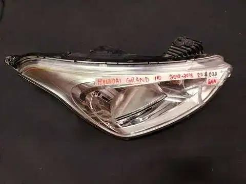
028Hyundai Grand i102014-2018 · lado derecho · genérico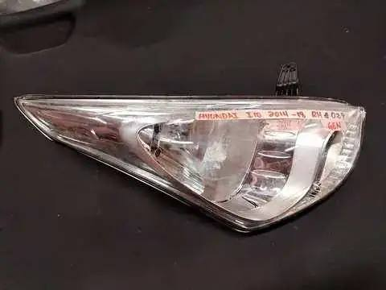
029Hyundai i102014-18 · lado derecho · genérico 030Hyundai Creta2016-19 · lado derecho · genérico
030Hyundai Creta2016-19 · lado derecho · genérico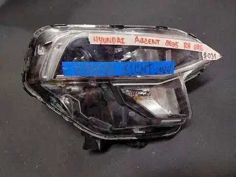
031Hyundai Accent2023-26 · lado derecho · original 033Hyundai Creta2016-19 · lado izquierdo · original
033Hyundai Creta2016-19 · lado izquierdo · original 034Hyundai Grand i102014-2018 · lado izquierdo · original
034Hyundai Grand i102014-2018 · lado izquierdo · original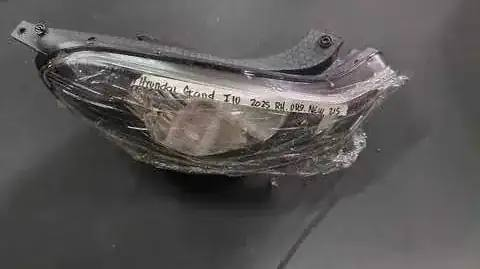
215Hyundai Grand i102020-26 · lado derecho · original nuevo 217Hyundai Creta2016-19 · lado derecho · original
217Hyundai Creta2016-19 · lado derecho · original 852Hyundai Venue2022-24 · lado derecho · original
852Hyundai Venue2022-24 · lado derecho · original 853Hyundai Accent2023-26 · lado derecho · original
853Hyundai Accent2023-26 · lado derecho · original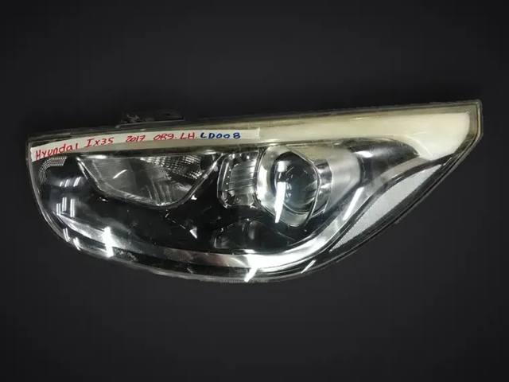
LD008Hyundai ix352017 · lado izquierdo · original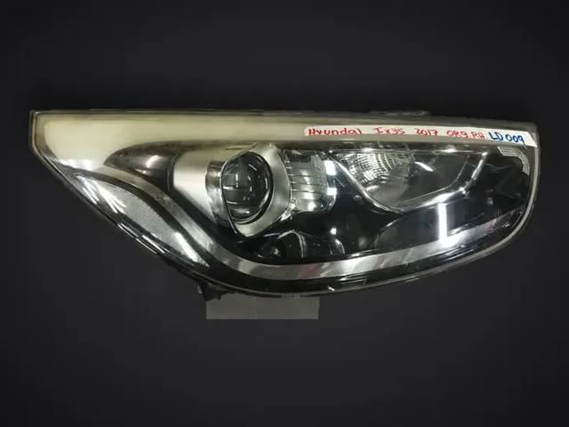
LD009Hyundai ix352017 · lado derecho · original LD010Hyundai Verna2017-21 · lado derecho · original
LD010Hyundai Verna2017-21 · lado derecho · original LD011Hyundai Tucson2022-24 · lado derecho · original
LD011Hyundai Tucson2022-24 · lado derecho · original LD012Hyundai Accent2015-17 · lado izquierdo · original
LD012Hyundai Accent2015-17 · lado izquierdo · original LD013Hyundai i202015-18 · lado izquierdo · original
LD013Hyundai i202015-18 · lado izquierdo · original LD014Hyundai Accent2015-17 · lado derecho · original
LD014Hyundai Accent2015-17 · lado derecho · original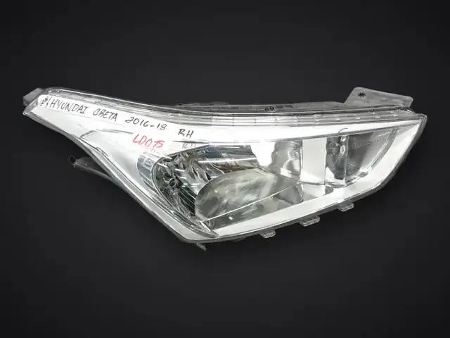
LD015Hyundai Creta2016-19 · lado derecho · genérico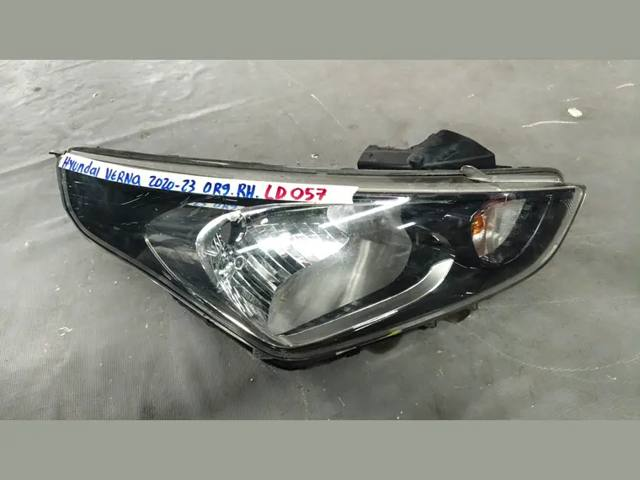
LD057Hyundai Verna2020-23 · lado derecho · original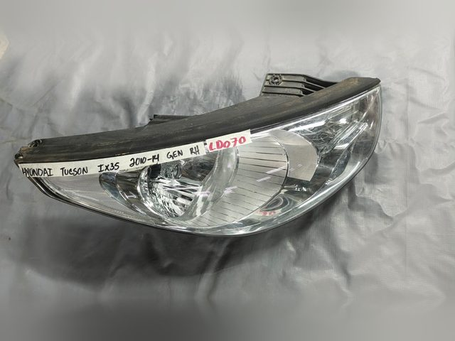
LD070Hyundai Tucson ix352010-15 · lado derecho · genéricoFaros y lámparas delanteras para Nissan 32
 055Nissan Pathfinder2016 · lado izquierdo · original
055Nissan Pathfinder2016 · lado izquierdo · original 056Nissan Qashqai2014-17 · lado izquierdo · genérico
056Nissan Qashqai2014-17 · lado izquierdo · genérico 057Nissan Xtrail2017-22 · lado izquierdo · genérico
057Nissan Xtrail2017-22 · lado izquierdo · genérico 058Nissan NP3002016 · lado derecho · genérico
058Nissan NP3002016 · lado derecho · genérico 059Nissan Xtrail2017-22 · lado izquierdo · genérico
059Nissan Xtrail2017-22 · lado izquierdo · genérico 061Nissan Kicks2024-25 · lado izquierdo · original
061Nissan Kicks2024-25 · lado izquierdo · original 062Nissan Pathfinder2013-16 · lado izquierdo · original
062Nissan Pathfinder2013-16 · lado izquierdo · original 063Nissan Kicks2017-20 · lado derecho · original
063Nissan Kicks2017-20 · lado derecho · original 064Nissan Kicks2017-20 · lado derecho · original
064Nissan Kicks2017-20 · lado derecho · original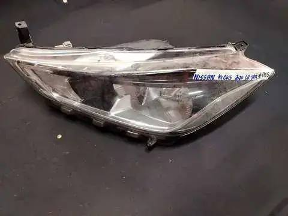
065Nissan Kicks2017-20 · lado izquierdo · original 066Nissan Kicks2017-20 · lado izquierdo · original
066Nissan Kicks2017-20 · lado izquierdo · original 068Nissan Kicks2017-20 · lado derecho · original
068Nissan Kicks2017-20 · lado derecho · original 069Nissan Patrol Y612005 · lado derecho · original
069Nissan Patrol Y612005 · lado derecho · original 070Nissan Qashqai2014-17 · lado izquierdo · genérico
070Nissan Qashqai2014-17 · lado izquierdo · genérico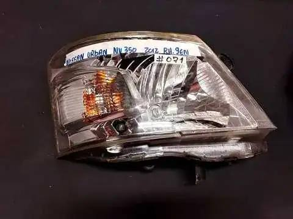
071Nissan Urban NV3502012 · lado derecho · genérico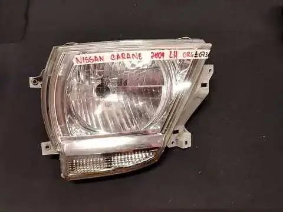
073Nissan Carane2009 · lado izquierdo · original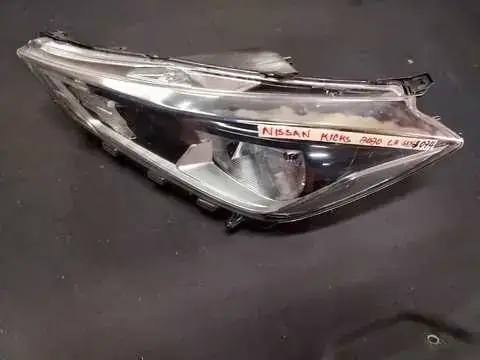
074Nissan Kicks2017-20 · lado izquierdo · genérico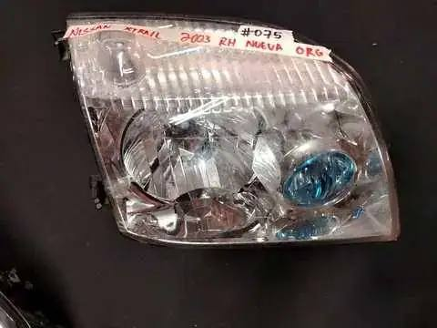
075Nissan X-Trail2003 · lado derecho · original 076Nissan Kicks2017-20 · lado izquierdo · original
076Nissan Kicks2017-20 · lado izquierdo · original 077Nissan Kicks2017-20 · lado derecho · original
077Nissan Kicks2017-20 · lado derecho · original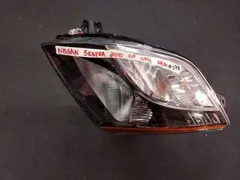
078Nissan Sentra2010-12 · lado izquierdo · original 079Nissan Frontier2005-15 · lado izquierdo · genérico
079Nissan Frontier2005-15 · lado izquierdo · genérico 080Nissan Kicks2017-20 · lado derecho · genérico
080Nissan Kicks2017-20 · lado derecho · genérico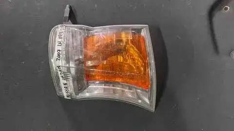
218Nissan Urban2007 · lado izquierdo · original LD040Nissan Sentra B141995-99 · lado derecho · genérico nuevo
LD040Nissan Sentra B141995-99 · lado derecho · genérico nuevo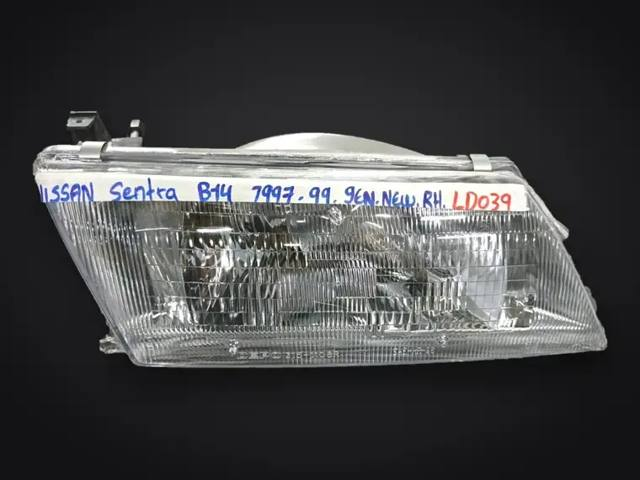
LD039Nissan Sentra B141995-99 · lado derecho · genérico nuevo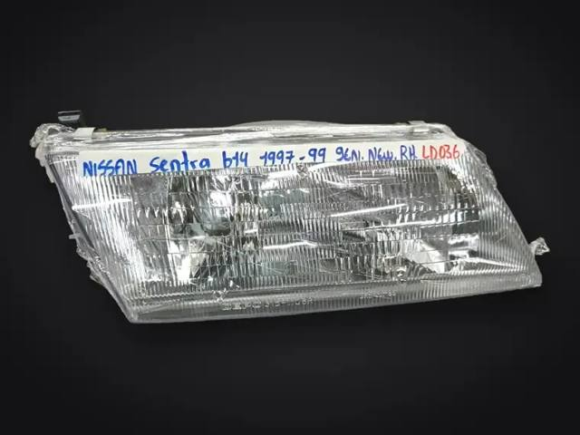
LD036Nissan Sentra B141995-99 · lado derecho · genérico nuevo LD035Nissan Sentra B141995-99 · lado derecho · genérico nuevo
LD035Nissan Sentra B141995-99 · lado derecho · genérico nuevo LD029Nissan Sentra B141995-99 · lado izquierdo · genérico nuevo
LD029Nissan Sentra B141995-99 · lado izquierdo · genérico nuevo LD034Nissan Sentra B141995-99 · lado izquierdo · genérico nuevo
LD034Nissan Sentra B141995-99 · lado izquierdo · genérico nuevo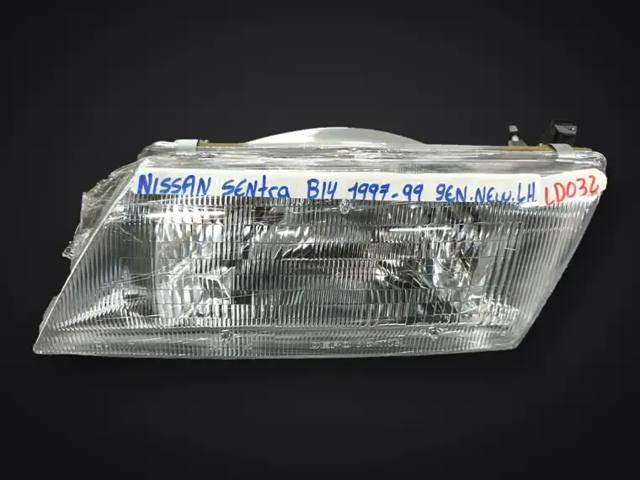
LD032Nissan Sentra B141995-99 · lado izquierdo · genérico nuevo LD031Nissan Sentra B141995-99 · lado izquierdo · genérico nuevo
LD031Nissan Sentra B141995-99 · lado izquierdo · genérico nuevoFaros y lámparas delanteras para GAC 19
 035GAC GS4 Max2025 · lado derecho · original
035GAC GS4 Max2025 · lado derecho · original 036GAC Emzoom2025 · lado derecho · original
036GAC Emzoom2025 · lado derecho · original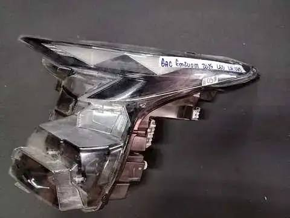
038GAC Emzoom2025 · lado izquierdo · original 039GAC GS82025 · lado izquierdo · original
039GAC GS82025 · lado izquierdo · original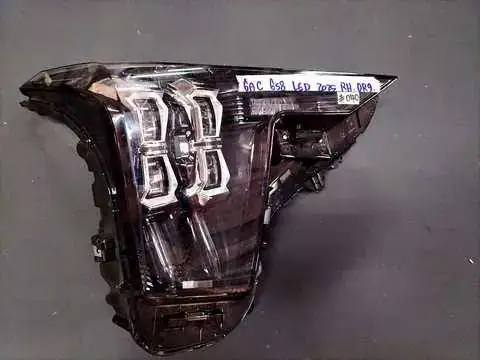
040GAC GS82025 · lado derecho · original 041GAC GS3 Power2021-26 · lado derecho · original
041GAC GS3 Power2021-26 · lado derecho · original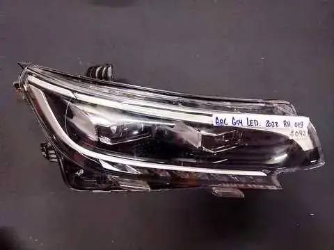
042GAC GS42022 · lado derecho · original 043GAC GS3 Power2021-26 · lado izquierdo · original
043GAC GS3 Power2021-26 · lado izquierdo · original 044GAC GS32017 · lado izquierdo · original
044GAC GS32017 · lado izquierdo · original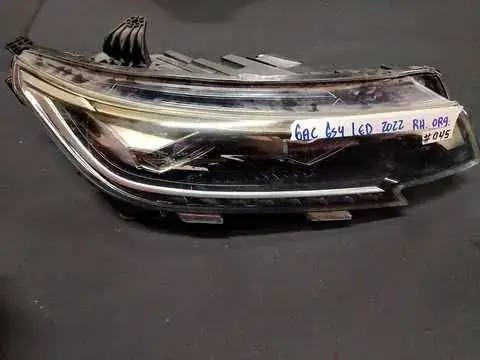
045GAC GS42022 · lado derecho · original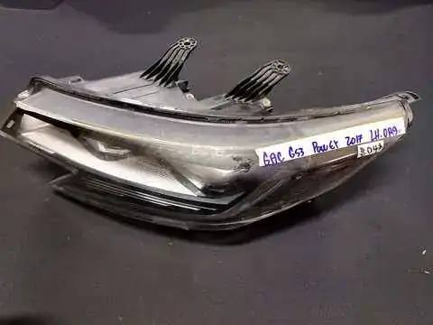
048GAC GS3 Power2021-26 · lado izquierdo · original 049GAC GS4 LED2022 · lado derecho · original
049GAC GS4 LED2022 · lado derecho · original 050GAC GS3 Power2021-26 · lado izquierdo · original
050GAC GS3 Power2021-26 · lado izquierdo · original 051GAC GS3 Power2021-26 · lado derecho · original
051GAC GS3 Power2021-26 · lado derecho · original 052GAC GS3 Power2021-26 · lado izquierdo · original
052GAC GS3 Power2021-26 · lado izquierdo · original 053GAC GS3 Power2021-26 · lado derecho · original
053GAC GS3 Power2021-26 · lado derecho · original LD004GAC GS4 Max2023-26 · lado derecho · original
LD004GAC GS4 Max2023-26 · lado derecho · original LD005GAC GS82018-2023 · lado derecho · originalLD052GAC GS8 Full LED2025 · lado izquierdo · original
LD005GAC GS82018-2023 · lado derecho · originalLD052GAC GS8 Full LED2025 · lado izquierdo · originalFaros y lámparas delanteras para KIA 15
 001KIA Rio2018-20 · lado derecho · original
001KIA Rio2018-20 · lado derecho · original 002KIA Sonet2023-26 · lado izquierdo · original
002KIA Sonet2023-26 · lado izquierdo · original 004KIA Rio2018-20 · lado izquierdo · genérico
004KIA Rio2018-20 · lado izquierdo · genérico 005KIA Forte2016-18 · lado izquierdo · original
005KIA Forte2016-18 · lado izquierdo · original 006KIA Soluto2020-26 · lado izquierdo · original008KIA Rio2013-17 · lado derecho · original
006KIA Soluto2020-26 · lado izquierdo · original008KIA Rio2013-17 · lado derecho · original 009KIA Picanto GT2018-20 · lado izquierdo · original
009KIA Picanto GT2018-20 · lado izquierdo · original 010KIA Sportage2016-18 · lado derecho · original012KIA Sportage2023-25 · lado derecho · original
010KIA Sportage2016-18 · lado derecho · original012KIA Sportage2023-25 · lado derecho · original 013KIA K32024-25 · lado derecho · original
013KIA K32024-25 · lado derecho · original 016KIA Picanto2018-22 · lado izquierdo · original216KIA Picanto2018-22 · lado izquierdo · genérico nuevo
016KIA Picanto2018-22 · lado izquierdo · original216KIA Picanto2018-22 · lado izquierdo · genérico nuevo RH-003-LKIA Soluto2020-26 · lado izquierdo · nuevo
RH-003-LKIA Soluto2020-26 · lado izquierdo · nuevo RH-003-RKIA Soluto2020-26 · lado derecho · nuevo
RH-003-RKIA Soluto2020-26 · lado derecho · nuevo LD018KIA Rio2018-20 · lado izquierdo · original
LD018KIA Rio2018-20 · lado izquierdo · originalFaros y lámparas delanteras para Suzuki 14
 102Suzuki Swift2017 · lado derecho · original
102Suzuki Swift2017 · lado derecho · original 103Suzuki Vitara2015-18 · lado izquierdo · genérico
103Suzuki Vitara2015-18 · lado izquierdo · genérico 104Suzuki Baleno2023-26 · lado izquierdo · original
104Suzuki Baleno2023-26 · lado izquierdo · original 105Suzuki Vitara2006-14 · lado derecho · original
105Suzuki Vitara2006-14 · lado derecho · original 106Suzuki Swift2017 · lado derecho · original
106Suzuki Swift2017 · lado derecho · original 108Suzuki Jimny Full LED2024 · lado derecho · original110Suzuki Fronx2025 · lado derecho · original
108Suzuki Jimny Full LED2024 · lado derecho · original110Suzuki Fronx2025 · lado derecho · original 111Suzuki Fronx2025 · lado izquierdo · original112Suzuki Grand Vitara2025 · lado izquierdo · original
111Suzuki Fronx2025 · lado izquierdo · original112Suzuki Grand Vitara2025 · lado izquierdo · original 113Suzuki Fronx2025 · lado izquierdo · original
113Suzuki Fronx2025 · lado izquierdo · original 848Suzuki APV2005-14 · lado izquierdo · original855Suzuki Vitara2016-20 · lado derecho · genérico
848Suzuki APV2005-14 · lado izquierdo · original855Suzuki Vitara2016-20 · lado derecho · genérico LD055Suzuki A-Cross2026-27 · lado derecho · original
LD055Suzuki A-Cross2026-27 · lado derecho · original LD068Suzuki Vitara2016-20 · lado derecho · genérico
LD068Suzuki Vitara2016-20 · lado derecho · genéricoFaros y lámparas delanteras para Honda 12
081Honda CR-V2017-22 · lado derecho · original 083Honda Civic Coupe2014-15 · lado derecho · original
083Honda Civic Coupe2014-15 · lado derecho · original 084Honda Odyssey2018-20 · lado izquierdo · original085Honda CRV2012-14 · lado izquierdo · original
084Honda Odyssey2018-20 · lado izquierdo · original085Honda CRV2012-14 · lado izquierdo · original 086Honda Pilot2016-2018 · lado derecho · genérico
086Honda Pilot2016-2018 · lado derecho · genérico 087Honda Civic Coupe2014-15 · lado derecho · original
087Honda Civic Coupe2014-15 · lado derecho · original 088Honda HRV2023-26 · lado izquierdo · original
088Honda HRV2023-26 · lado izquierdo · original 089Honda HR-V2019-22 · lado izquierdo · original
089Honda HR-V2019-22 · lado izquierdo · original 090Honda Civic Coupe2014-15 · lado izquierdo · original
090Honda Civic Coupe2014-15 · lado izquierdo · original 100Honda HR-V2023-26 · lado derecho · original
100Honda HR-V2023-26 · lado derecho · original 101Honda CR-V2007-2011 · originalLD058Honda CR-V2012-16 · lado derecho · original
101Honda CR-V2007-2011 · originalLD058Honda CR-V2012-16 · lado derecho · original
083Honda Civic Coupe2014-15 · lado derecho · original084Honda Odyssey2018-20 · lado izquierdo · original085Honda CRV2012-14 · lado izquierdo · original086Honda Pilot2016-2018 · lado derecho · genérico087Honda Civic Coupe2014-15 · lado derecho · original088Honda HRV2023-26 · lado izquierdo · original089Honda HR-V2019-22 · lado izquierdo · original090Honda Civic Coupe2014-15 · lado izquierdo · original100Honda HR-V2023-26 · lado derecho · original101Honda CR-V2007-2011 · originalLD058Honda CR-V2012-16 · lado derecho · originalFaros y lámparas delanteras para Ford 11
 165Ford Edge2015-18 · lado derecho · original
165Ford Edge2015-18 · lado derecho · original 166Ford Mustang2018 · lado derecho · original169Ford F-1502014 · lado derecho · original
166Ford Mustang2018 · lado derecho · original169Ford F-1502014 · lado derecho · original 170Ford Explorer2011-15 · lado derecho · original
170Ford Explorer2011-15 · lado derecho · original 171Ford Explorer2011-15 · lado derecho · original
171Ford Explorer2011-15 · lado derecho · original 172Ford Ranger2018 · lado izquierdo · original
172Ford Ranger2018 · lado izquierdo · original 173Ford Territory2024 · lado izquierdo · original
173Ford Territory2024 · lado izquierdo · original 174Ford F-1502018 · lado izquierdo · genérico
174Ford F-1502018 · lado izquierdo · genérico 185Ford Ka+ (osf)2019 · lado derecho · original
185Ford Ka+ (osf)2019 · lado derecho · original 859Ford Escape2020-22 · lado derecho · originalLD003Ford Bronco LED2021-2026 · lado izquierdo · original
859Ford Escape2020-22 · lado derecho · originalLD003Ford Bronco LED2021-2026 · lado izquierdo · originalFaros y lámparas delanteras para Mitsubishi 7
 097Mitsubishi Eclipse Cross2018-20 · lado izquierdo · original
097Mitsubishi Eclipse Cross2018-20 · lado izquierdo · original 098Mitsubishi Eclipse Cross2022-25 · lado derecho · original
098Mitsubishi Eclipse Cross2022-25 · lado derecho · original 099Mitsubishi L2002016-18 · lado derecho · original
099Mitsubishi L2002016-18 · lado derecho · original 119Mitsubishi Outlander2022-26 · lado izquierdo · original
119Mitsubishi Outlander2022-26 · lado izquierdo · original 120Mitsubishi Eclipse Cross2025 · lado izquierdo · originalLD059Mitsubishi Montero2003-07 · lado derecho · original
120Mitsubishi Eclipse Cross2025 · lado izquierdo · originalLD059Mitsubishi Montero2003-07 · lado derecho · original LD060Mitsubishi Eclipse Cross2022-26 · lado derecho
LD060Mitsubishi Eclipse Cross2022-26 · lado derechoFaros y lámparas delanteras para Volkswagen 7
 179Volkswagen T-Cross2020 · lado izquierdo · original
179Volkswagen T-Cross2020 · lado izquierdo · original 180Volkswagen Gol2017 · lado izquierdo · original181Volkswagen T-Cross2020 · lado derecho · original
180Volkswagen Gol2017 · lado izquierdo · original181Volkswagen T-Cross2020 · lado derecho · original 182Volkswagen Saveiro2013 · lado izquierdo · original
182Volkswagen Saveiro2013 · lado izquierdo · original 183Volkswagen Gol2017 · lado izquierdo · original184Volkswagen T-Cross2020 · lado izquierdo · original
183Volkswagen Gol2017 · lado izquierdo · original184Volkswagen T-Cross2020 · lado izquierdo · original 192Volkswagen Tiguan2020 · lado derecho · original
192Volkswagen Tiguan2020 · lado derecho · originalFaros y lámparas delanteras para Mercedes-Benz 7
191Mercedes-Benz GLE2025 · lado derecho · original 193Mercedes-Benz GLC (W253)2016-19 · lado izquierdo · original
193Mercedes-Benz GLC (W253)2016-19 · lado izquierdo · original 194Mercedes-Benz GLE 4502025 · lado derecho · original195Mercedes-Benz GLC (254)2023-26 · lado izquierdo · original
194Mercedes-Benz GLE 4502025 · lado derecho · original195Mercedes-Benz GLC (254)2023-26 · lado izquierdo · original 196Mercedes-Benz GLE 4502025 · lado izquierdo · original
196Mercedes-Benz GLE 4502025 · lado izquierdo · original 197Mercedes-Benz GLE2025 · lado derecho · originalLD019Mercedes-Benz GLC2023-26 · lado izquierdo · original
197Mercedes-Benz GLE2025 · lado derecho · originalLD019Mercedes-Benz GLC2023-26 · lado izquierdo · original
193Mercedes-Benz GLC (W253)2016-19 · lado izquierdo · original194Mercedes-Benz GLE 4502025 · lado derecho · original195Mercedes-Benz GLC (254)2023-26 · lado izquierdo · original196Mercedes-Benz GLE 4502025 · lado izquierdo · original197Mercedes-Benz GLE2025 · lado derecho · originalLD019Mercedes-Benz GLC2023-26 · lado izquierdo · originalFaros y lámparas delanteras para Chevrolet 5
186Chevrolet N4002023 · lado izquierdo · original 187Chevrolet Tracker2016 · lado derecho · genérico nuevo
187Chevrolet Tracker2016 · lado derecho · genérico nuevo 188Chevrolet Groove2023 · lado izquierdo · original189Chevrolet N4002023 · lado izquierdo · original
188Chevrolet Groove2023 · lado izquierdo · original189Chevrolet N4002023 · lado izquierdo · original 190Chevrolet N4002023 · lado derecho · original
190Chevrolet N4002023 · lado derecho · original
187Chevrolet Tracker2016 · lado derecho · genérico nuevo188Chevrolet Groove2023 · lado izquierdo · original189Chevrolet N4002023 · lado izquierdo · original190Chevrolet N4002023 · lado derecho · originalFaros y lámparas delanteras para Mazda 4
176Mazda CX32017 · lado izquierdo · original177Mazda 32017 · lado derecho · original 178Mazda CX5 (full)2022-26 · lado izquierdo · originalLD061Mazda 32010-13 · lado derecho · original
178Mazda CX5 (full)2022-26 · lado izquierdo · originalLD061Mazda 32010-13 · lado derecho · original
178Mazda CX5 (full)2022-26 · lado izquierdo · originalLD061Mazda 32010-13 · lado derecho · originalFaros y lámparas delanteras para Jaecoo 4
203Jaecoo J52023 · lado izquierdo · original 204Jaecoo J52023 · lado izquierdo · original205Jaecoo 72025 · lado izquierdo · original
204Jaecoo J52023 · lado izquierdo · original205Jaecoo 72025 · lado izquierdo · original 206Jaecoo 7 Pro2023-25 · lado izquierdo · original
206Jaecoo 7 Pro2023-25 · lado izquierdo · original
204Jaecoo J52023 · lado izquierdo · original205Jaecoo 72025 · lado izquierdo · original206Jaecoo 7 Pro2023-25 · lado izquierdo · originalFaros y lámparas delanteras para Forthing 3
 115Forthing T5 EVO2021-26 · lado derecho · originalLD063Forthing T5 EVO2021-26 · lado izquierdo · originalLD065Forthing T5 EVO2021-26 · lado derecho · original
115Forthing T5 EVO2021-26 · lado derecho · originalLD063Forthing T5 EVO2021-26 · lado izquierdo · originalLD065Forthing T5 EVO2021-26 · lado derecho · originalFaros y lámparas delanteras para BMW 3
 198BMW M3/M42019 · lado izquierdo · original
198BMW M3/M42019 · lado izquierdo · original 199BMW X52007-13 · lado izquierdo · original
199BMW X52007-13 · lado izquierdo · original 200BMW X32018 · lado izquierdo · original
200BMW X32018 · lado izquierdo · originalFaros y lámparas delanteras para RAM 3
211RAM 1500 (led)2019 · lado derecho · original212RAM 1500 (led)2020 · lado derecho · originalLD064RAM 1000 / Fiat Toro2016-21 · lado derecho · original
Faros y lámparas delanteras para Changan 2
093Changan MD2012019-25 · lado izquierdo · original094Changan MD2012019-25 · lado izquierdo · original
Faros y lámparas delanteras para Maxus 2
 096Maxus D90
096Maxus D90Faros y lámparas delanteras para Subaru 2
Faros y lámparas delanteras para BYD 2
 201BYD Song Plus
201BYD Song Plus 202BYD Song Plus
202BYD Song PlusFaros y lámparas delanteras para Isuzu 2
 207Isuzu Elf
207Isuzu Elf 208Isuzu D-Max
208Isuzu D-MaxFaros y lámparas delanteras para Jeep 2
 209Jeep Renegade2019-26 · lado izquierdo · original
209Jeep Renegade2019-26 · lado izquierdo · original 210Jeep Commander2023 · lado izquierdo · original
210Jeep Commander2023 · lado izquierdo · originalFaros y lámparas delanteras para Gwm 2
LD066Gwm Poer P-Series2024-26 · lado derecho · originalLD067Gwm Poer2020-23 · lado izquierdo · original
Faros y lámparas delanteras para Acura 1
Faros y lámparas delanteras para Dodge 1
Faros y lámparas delanteras para Chery 1
Faros y lámparas delanteras para Porsche 1
Faros y lámparas delanteras para Lexus 1
 213Lexus LX460
213Lexus LX460Faros y lámparas delanteras para Peugeot 1
Faros y lámparas delanteras para International 1
Faros y lámparas delanteras para MG 1
Otros tipos de pieza
Parrillas 341Defensas traseras 263Defensas delanteras 219Lámparas traseras 210Flares 183Covers de halógena 167Guardafangos 143Halógenas y faros antiniebla 114Puertas 99Cubrepolvos 93Refuerzos delanteros 79Tapas de baúl 69Capós 68Depósitos de agua 64Defensas traseras inferiores 63Molduras traseras 59Defensas delanteras inferiores 59Marcos de radiador 58Retrovisores 57Estribos y rolling boards 55Tapas superiores de radiador 49Vidrios 47Molduras de puerta 47Protectores inferiores 29Refuerzos traseros 28Molduras delanteras 27Guardafangos traseros 22Copas 20Extensiones de defensa trasera 18Ventiladores 13Extensiones de defensa delantera 8Tableros 6Accesorios nuevos 5Soportes de defensa 2Discos de freno 1Covers de vagón (bedliner) 1